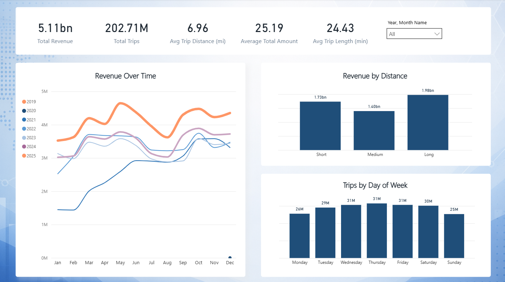
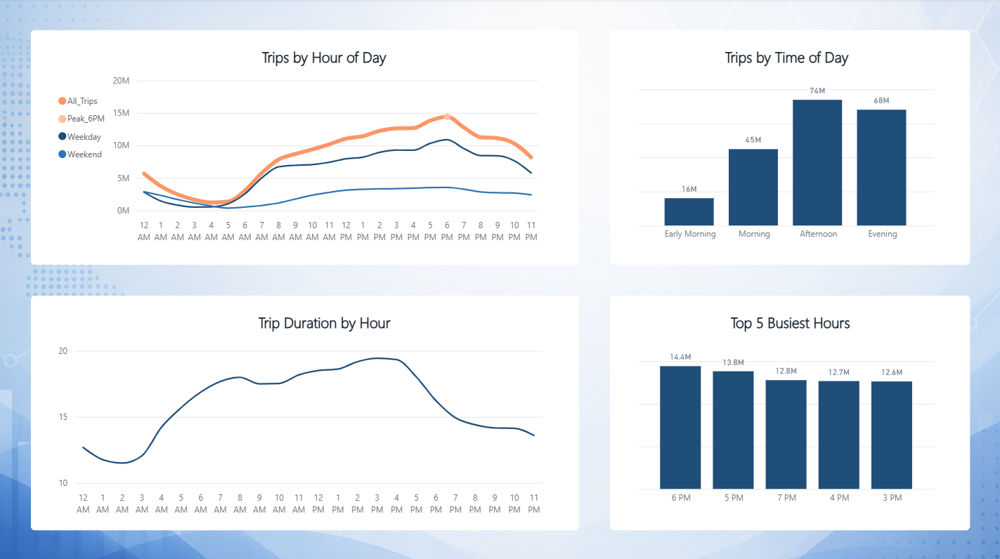
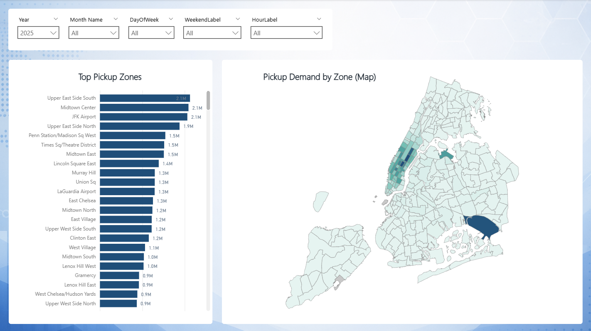
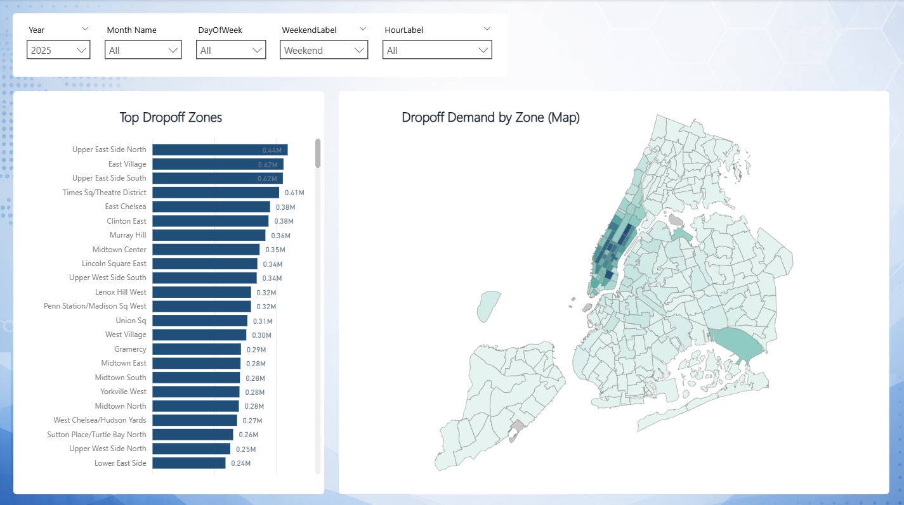
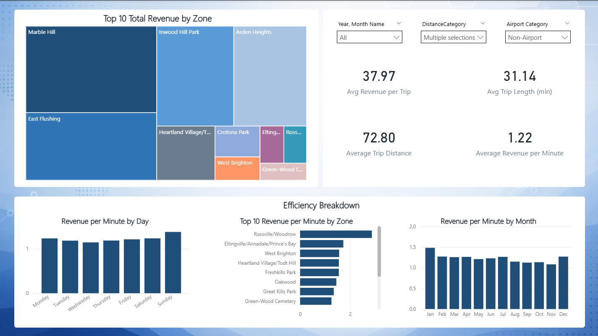

Data Preparation & Aggregation
Trip records were aggregated into reporting tables by hour, zone, airport activity, and trip category so the dashboard could handle large-volume analysis without becoming slow or cluttered.
Portfolio Case Study
Taxi operations depend on timing, location, trip behavior, and revenue efficiency. This dashboard focuses on the deeper patterns behind NYC taxi activity: when demand peaks, where trips concentrate, and which trip patterns generate the strongest operating value.
Overview
Transportation data becomes valuable when it can explain both demand and efficiency. This project uses NYC taxi trip data to analyze how trip volume, pickup and dropoff zones, time of day, trip distance, duration, and revenue interact across millions of trips.
The dashboard is built around the operational questions that matter most: where demand is concentrated, when the system is under the most pressure, and how different trip types affect revenue performance.
Because the dataset is large, the project also includes aggregation and preprocessing work to keep the report responsive while still supporting meaningful filtering, drilldown, and comparison across time and geography.
Business Problem
Demand volume alone does not tell the full story. For transportation analysis, the important questions are how demand behaves, where it concentrates, and whether that activity translates into efficient revenue generation.
Approach
Trip records were aggregated into reporting tables by hour, zone, airport activity, and trip category so the dashboard could handle large-volume analysis without becoming slow or cluttered.
Metrics were created for trip volume, revenue, duration, distance, airport activity, and revenue efficiency to compare demand patterns against operating value.
The report is organized around the natural flow of the analysis: overall activity, time-based demand, geographic concentration, and revenue efficiency.
Filtering and report interactions make it possible to explore patterns by time, location, airport activity, and trip category without losing the larger operational picture.
Main Dashboard
The main view gives a quick read on taxi activity, revenue, trip behavior, and geographic concentration before moving into deeper analysis.

Demand Analysis
Demand reporting shows when taxi activity builds, when it peaks, and how trip volume changes across hours, weekdays, weekends, and airport-related traffic.

Geographic Analysis
Geographic reporting highlights where taxi activity is concentrated and how pickup and dropoff behavior changes across NYC zones.


Efficiency
Revenue alone does not show efficiency. This view compares revenue against trip duration and distance to show which trip patterns produce stronger operating value.

Key Insights
Tools Used
Data modeling, DAX measures, KPI reporting, filtering, dashboard design, and interactive analysis.
Data shaping, cleanup workflows, preprocessing, and reporting table preparation.
Aggregation pipelines, preprocessing workflows, and dataset optimization for large-scale reporting.
Outcome
The project covers the full analytics workflow from raw trip data through preprocessing, aggregation, KPI development, Power BI modeling, and dashboard design.
The final report gives a clear view of taxi demand, geographic concentration, airport activity, revenue behavior, and operational efficiency across NYC taxi trips.
This project is intentionally more analytics-heavy than a simple KPI dashboard. It focuses on pattern discovery, operational tradeoffs, and performance behavior across a large, complex transportation dataset.